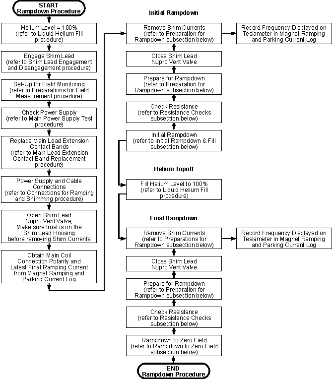
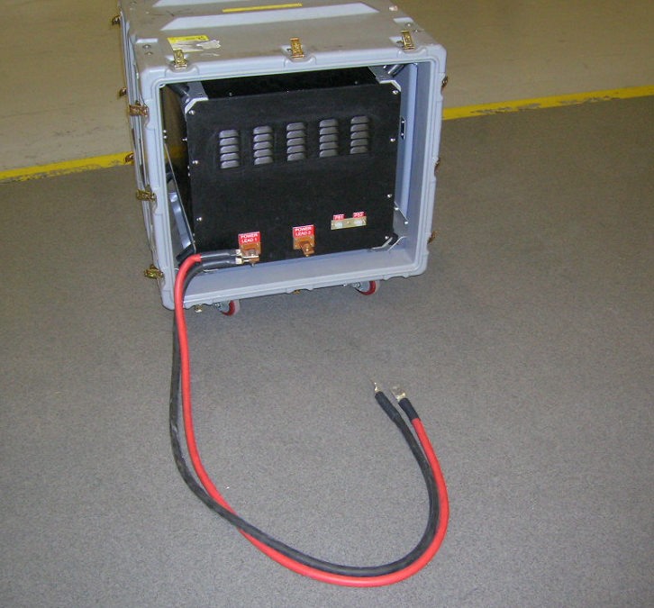

Operating Documentation
Direction 5440000, Rev# 5
Signa HDxt Service Methods
Module Version 3.0, Version Date 2/8/10
Operating Documentation |
| Required Persons | Preliminary Reqs | Procedure | Finalization |
|---|---|---|---|
| 2 | Included in Procedure | 8 or 14 hours | Included in Procedure |
The magnet is initially ramped down until the helium level reaches 80%, then it is parked and refilled with liquid helium before finally being ramped down to zero field. Make sure the magnet's helium level is 100% before beginning magnet rampdown. Also make sure to plan for the helium fill while the magnet is parked. The parked fill will use approximately 500 liters of liquid helium and take about one hour. A rampdown flowchart is provided below.
Illustration 1: Rampdown Flowchart

750A Ramp Cable Kit 2135435 and Shim Cable Kit 2135558 are required to ramp and shim the magnet.
| Procedures Referenced | |
|---|---|
| Located in the Current Chapter | Located in Other Chapters |
| Main Lead Extension Contact Band Replacement | Liquid Helium Fill |
| Preparation for Rampdown, Preparation for Rampdown | Preparations for Field Measurement |
| Resistance Checks, Resistance Checks | Shim Lead Engagement and Disengagement |
| Initial Rampdown and Fill, Initial Rampdown & Fill | Connections for Ramping and Shimming |
| Rampdown to Zero Field, Rampdown to Zero Field | Main Power Supply Tests: TCR 7.5T750 Main Power Supply Tests for 750 amp power supplies or ESS7.5-1000-2-D-1236 Main Power Supply Tests for 1,000 amp power supplies |
| Magnet Ramping and Parking Current Log | |
| Item | Qty | Effectivity | Part# | Manufacturer | |
|---|---|---|---|---|---|
| 3.0T Warning Sign & Label Kit | 1 | - | 2379494 | - | |
| Portable Oxygen Monitor | 1/person | - | 2287000 | - | |
| Cryogen Safety Wear Kit | 1 kit/person | - | 46-271137G1 | - | |
| Nonabsorbent Protective Clothing (long sleeve shirt and pants) | 1 set/person | - | - | - | |
| Nonferrous Safety Shoes | 1 pr./person | - | - | - | |
| Brass Master Padlock with Brass Shackle | 1 | - | 46-194427P320 | - | |
| Brass Master Transition Padlock | 1 | - | 2387081 | - | |
| Black & White on Red Lockout Tag | 1 pkg. of 25 | - | 46-194427P322 | - | |
| Transition LOTO Tag | 1 | - | 46-194427P313 | - | |
| Line Cord Plug Cover, Plugs ≤3 in. (76 mm) wide x ≤5.875 in. (149 mm) long, Cords ≤1.25 in. (31 mm) diameter | 1 | - | 46-194427P321 | - | |
| 750 amp TCR 7.5T750 Main Power Supply 46-260776G3 or 1,000 amp ESS 7.5-1000-2-D-1236 Main Power Supply 46-260776G4 | - | 46-260776G3 or 46-260776G4 | - | ||
| Shim Power Supply | 1 | - | 46-260777G3 | - | |
| 750 amp Ramp Cable Kit 2135435 or 1,000 amp Ramp Cable Kit with Ground 2353394 | 1 | - | 2135435 or 2353394 | - | |
| Field Shim Cable Kit (if not already ordered with the magnet) | 1 | - | 2135558 | - | |
| Fixed Main Lead Extension 46-294204G1 or Flexible Main Lead Extension 2287029 (for low ceiling height sites) | 1 | - | 46-294204G1 or 2287029 | - | |
| Hold-Down Tool: Standard 2193922, Short 2276755 (for low ceiling height sites), or LCC300 Ramp Lead Hold-Down Tool 5116737 (Only for use when LHe top-off is planned immediately after parking at the end of Initial Rampdown; included in Field Service Tools Collector 5103278) | 1 | - | 2193922, 2276755 or 5116737 | - | |
| Retractable Shim Lead Assembly 2173354 or Retractable Shim Lead Assembly, Short 2285073 (for low ceiling height sites) | 1 | - | 2173354 or 2285073 | - | |
| Auxiliary Rampdown Cable | 1 | - | 2217315 | - | |
| Digital Voltmeter (DVM) | 1 | - | - | - | |
| MetroLab Teslameter Kit (or equivalent magnetic field measuring device) | 1 | - | 46-251865G4 | - | |
| No. 6 MetroLab Probe (included in MetroLab Teslameter Kit 46-251865G4) | 1 | - | 2295525-5 | - | |
| Cardboard Box or nonferromagnetic frame | 1 | - | - | - | |
| Titanium Tool Kit: Basic Set 5113258, Installation Set 5112581, or other nonferromagnetic tools (magnets with magnetic fields >1.5T) | 1 kit | - | 5113258 or 5112581 | - | |
| HDx Service Platform - Can use Universal Service Ladder/Platform 2319156 if service space ≥ 30 in. (762 mm) | 1 | - | 5155291 or 2319156 | - | |
| Service Methods documentation for the magnet/enclosures (available through the Common Documentation Library at gehealthcare.com or your local GE Healthcare Service Representative) | 1 | - | - | - | |
| 3.0T Ramp Down Unit | 1 | - | 5271012 | STI | |
| ||||
| Potential Fatal Injury! | ||||
| before starting to ramp down the magnet: | ||||
|
| ||||
| Potential Fatal Injury! | ||||
| before starting to ramp down the magnet: | ||||
| Have all Work Assistants or Observers comply with the 'Buddy System Requirements & Certification' subsection of “2301164PRE MR Magnet Safety Requirements.” |
| ||||
| Asphyxiation Hazard! | ||||
| This Magnet Rampdown to Zero Field Procedure generates odorless, colorless helium gas that displaces oxygen in the air. | ||||
| Make sure magnet room vent exhaust fan is on before starting to ramp down the magnet. |
| ||||
| Potential Projectile Hazard! | ||||
| Ferromagnetic objects in a strong magnetic field can become dangerous projectiles. | ||||
|
| ||||
| Explosion Hazard! | ||||
| Liquid cryogens can liquify atmospheric oxygen, producing a highly combustible oxygen liquid. | ||||
| No smoking in magnet and cryogen storage rooms! |
| ||||
| Potential Magnet Quench! | ||||
| The magnet may quench, rapidly releasing cryogenic gases, if its liquid helium level drops too low during magnet rampdown. | ||||
| Make sure the magnet is 100% full of liquid helium before starting to ramp down the magnet. |
| ||||
| Potential Cold Burn Hazard! | ||||
| Exposure to Cryogens and contact with cold objects is possible during magnet rampdown. | ||||
| Wear protective clothing, nonabsorbent gloves and goggles when ramping down the magnet. |
| ||||
| Electrical shock hazard! | ||||
| Touching both Main Lead Extensions at the same time or allowing them to contact each other while the magnet is at field will result in a rapid discharge through their contact points if the Switch Heater is activated or circuit resistance develops at that moment. | ||||
| Do not Touch both Main Lead Extensions at the same time. Do not allow the Main Lead Extensions to contact each other. Make sure input power to the Main Power Supply is disconnected when connecting the Main Lead Extensions. |
| ||||
| Electrical Shock Hazard! | ||||
| Contact with connectors leading to an energized power supply can cause electrical shock. | ||||
| Follow OSHA Lockout/Tagout (LOTO) procedures while making electrical connections to any power supply. |
| ||||
| Locate the Main Power Supply OUTSIDE the Magnet Room. | ||||
| Condition | Reference | Effectivity |
|---|---|---|
Make sure the area is secure and that ALL required Warning Signs are posted to meet the safety requirements stated in the following document before starting magnet rampdown. | - | |
Removal of some magnet enclosure components may be required to complete this Magnet Rampdown to Zero Field procedure. Refer to the appropriate document that follows andand the Service Methods documentation (available through the Common Documentation Library at gehealthcare.com or your local GE Healthcare Service Representative) before continuing if cover removal is required. | - | |
(continued) | - | |
Locate the Main Power Supply outside the Magnet Room and remove all loose ferromagnetic materials from the Magnet Room before starting magnet rampdown. | - | - |
Make sure the helium level in the magnet is 100% before starting this Magnet Rampdown to Zero Field procedure. | - | |
Make sure the Magnet Room exhaust fan is on and operational, and the Magnet Room door is propped open before starting this Magnet Rampdown to Zero Field procedure. | - | - |
Top Fill the magnet to 100% helium level in conformance with Liquid Helium Fill before continuing with this Magnet Rampdown to Zero Field procedure.
Make sure the Shim Lead Assembly is engaged in conformance with Shim Lead Engagement and Disengagement.
| ||||
If the Shim Lead cannot be engaged into the Shim Lead Connector
(P100) in the magnet Vertical Penetration due to icing or damage to
the P100's Sav-Con Connector, use the Auxiliary Rampdown Cable (2217315)
to ramp down the magnet. This cable connects the Main Coil Heater
via the J1C Connector on the magnet to J3 on the Main Power Supply.
(See Magnet System Wiring and either 750 Amp Main Coil Power
Supply or 1000 Amp Main Coil Power
Supply as appropriate.)
| ||||
Set up the MetroLab Teslameter and No. 6 Probe for single point magnetic field strength monitoring in conformance with Preparations for Field Measurement.
Perform power supply checks in conformance with the Main Power Supply Tests section (TCR 7.5T750 Main Power Supply Tests for 750 amp power supplies or ESS7.5-1000-2-D-1236 Main Power Supply Tests for 1,000 amp power supplies). Verify that the Shim Supply Heater currents are set at 810 mA, ±10 mA.
| ||||
| Electrical Shock Hazard! | ||||
| Contact with connectors leading to an energized power supply can cause electrical shock. | ||||
| Follow loto procedures while making electrical connections to any power supply. |
Disconnect and LOTO input power to both the Main Power Supply and the Shim Power Supply. Verify that no voltage is present by using a DVM or equivalent measuring device.
Replace the Main Lead Contact Bands in conformance to Main Lead Extension Contact Band Replacement.
Connect the Shim Coil Power Supply to the magnet by making all cable connections in conformance with Connections for Ramping and Shimming.
Open the Shim Lead's Nupro Vent Valve, and allow frost to appear on the Shim Lead Connector Housing before removing shim currents.
| ||||
| Do NOT connect input power to the Superconducting Shim Coil Power Supply until it is verified that all current controls are set to zero (turned fully counterclockwise) and the supply is turned off. | ||||
Remove LOTO and connect the input power to the Shim Power Supply.
| NOTE: | This section allows removal of all shim currents to find and document the actual main magnetic field strength to use as a target parking frequency when reramping the magnet. This will enable parking the magnet at a more accurate frequency and prevent retuning the rest of the system. |
| ||||
| Potential Magnet Quench! | ||||
| The magnet may quench, rapidly releasing cryogenic gases, if its liquid helium level drops too low during magnet rampdown. | ||||
| Make sure the magnet ≥95% full of liquid helium before continuing with magnet rampdown. |
| ||||
| Potential Magnet Quench! | ||||
| Applying power through the Shim Lead before the Shim Lead is sufficiently cooled or while the Shim Lead's Vent Valve is closed may result in a magnet quench. | ||||
| Make sure the Shim Lead's Nupro Vent Valve is open and frosting is visible on the Shim Lead Housing before turning on the Shim Coil Power Supply. |
Set the Main Power Switch on the Shim Coil Power Supply to the On position.
Set the Shim Coil Power Supply (shown below) to all last recorded Transverse 1 Currents from Magnet Ramping and Parking Current Log.
Illustration 2: Shim Coil Power Supply Controls (Front Panel)

Make sure the current polarities are correct.
Illustration 3: Magnet Polarity Ramped Normal

Set the Transverse 1 Heater Switch on the Shim Power Supply to I (on).
Verify that the heater currents are set to Transverse 1 = 610 mA, ±10 mA; Transverse 2 = 610 mA, ±10 mA; and Axial = 710 mA, ±15 mA.
If any current level is not correct, adjust the adjustment screw on the rear of the Shim Power Supply.
Allow a few minutes for the heater to drive the switches resistive.
Slowly adjust all Shim Current controls to zero.
The magnetic field strength reading on the Teslameter should change as the Axial Shim Currents are adjusted down to zero.
If no change is noticed in the Teslameter reading, the Axial Heater Switch may still be persistent. If this occurs, wait an additional two (2) minutes before continuing to decrease the currents.
Set the Heater Switch to O (off).
| ||||
| Electrical Shock Hazard! | ||||
| Contact with connectors leading to an energized power supply can cause electrical shock. | ||||
| Follow loto procedures while making electrical connections to any power supply. |
Set the Main Power Switch on the Shim Power Supply to Off. Disconnect all cables and LOTO input power. Verify that no voltage is present by using a DVM or equivalent measuring device.
| NOTE: | The frequency displayed on the Teslameter after the shim currents are removed is the target frequency when the magnet is reramped. |
Record the frequency displayed on the Teslameter in Magnet Ramping and Parking Current Log.
Close the Shim Lead's Nupro Vent Valve.
| ||||
| Electrical Shock Hazard! | ||||
| Contact with connectors leading to an energized power supply can cause electrical shock. | ||||
| Follow loto procedures while making electrical connections to any power supply. |
Disconnect and LOTO input power to the Main Power Supply. Verify that no voltage is present by using a DVM or equivalent measuring device.
| ||||
| Potential Magnet Quench! | ||||
| Improper engagement/disengagement of the Main Lead Extensions with the Main Lead Pins can cause a ramped magnet to quench. | ||||
| Insert Main Lead Extensions one at a time and, if the magnet is at field, allow them to cool sufficiently (a fog or water vapor forms around the Lead Extensions) before they contact the Main Lead Pins. |
| ||||
| Electrical Shock Hazard! | ||||
| Touching both Main Lead Extensions at the same time or allowing them to contact each other while the magnet is at field will result in a rapid discharge through their contact points if the Switch Heater is activated or circuit resistance develops at that moment. | ||||
| Do not touch both Main Lead Extensions at the same time. Do not allow the Main Lead Extensions to contact each other. |
| ||||
| Electrical Shock Hazard! | ||||
| Do not allow exposed body areas to come in contact with the cryostat or plumbing while inserting or extracting the Main Lead Extensions. |
| ||||
| Potential Cold Burn Hazard! | ||||
| contact with cold objects is possible during magnet rampdown. | ||||
| Wear nonabsorbent leather gloves with no holes or tears during insertion or extraction of the Main Lead Extensions. |
Connect the Main Power Supply and Main Lead Extensions to the magnet by making all cable connections in conformance with Connections for Ramping and Shimming.
| NOTE: | Skip the next step if not using the 3.0T Ramp Down Unit, and proceed to Step 4. |
Connect the 3.0T Ramp Down Unit 5271012 (Illustration 4) to the magnet power supply and the magnet:
Unpack the unit and connect the two 12 VDC power supplies to appropriate power (100 to 240 VAC, single phase, 50 to 60 Hz).
Verify fans on the front of the unit are working.
Cycle through the switches, and listen for the audible operation of the solenoids.
Leave all four switches in the down position.
Attach the paired red cable on the rear of the Ramp Down Unit to the + output of the ramp power supply.
Attach the positive ramp cable going to the magnet’s + ramp lead to the remaining lug on the Ramp Down Unit.
Illustration 4: Magnet Ramp Down Unit

Set the Heater 1 Main and Heater 2 Shim Axial Switches to the O (off) position. See Illustration 5 (750 amp Main Power Supply) or Illustration 6 (1,000 amp Main Power Supply).
Illustration 5: 750 Amp TCR 7.5T750 Superconducting Main Coil Service Power Supply Cabinet

Illustration 6: ESS7.5-1000-2-D-1236 Superconducting Main Coil Service Power Supply Cabinet

Set the Current and Voltage Adjustment controls to O (fully CCW).
Remove LOTO and connect the input power to the Main Power Supply.
| ||||
| Potential Magnet Quench! | ||||
| Turning on the Main Heater Switch while performing these resistance checks will cause a magnet quench. | ||||
| Make sure the Main Heater Switch stays OFF during resistance checks. |
Set the Main Power and Power On switches to the On position.
Set the Heater 2 Shim Axial Switch to I (on), and observe current rise in an analog ammeter (710 mA, ±10 mA) to verify circuit continuity. Make sure the Main Heater Switch is off.
Connect a Digital Volt Meter (DVM) to the end of the Voltage Sense Leads (identified below).
Illustration 7: Main Lead Extensions

Set the Current Adjustment Controls on the Main Power Supply to maximum (fully CW).
Observe the Digital Current Meter, and slowly turn the Voltage Control (CW) to set a 375 A current through the Main Leads, Main Lead Extensions, and the persistent Main Switch.
Record the voltage reading on the DVM in Magnet Ramping and Parking Current Log.
| ||||
| Potential Magnet Quench | ||||
| Voltage readings > 100 millivolts (mV) at 375 amps indicate unacceptable internal contact resistance at the Main Lead Extensions. Higher resistances will add more heat to the magnet, increasing boil-off and possibly causing a quench during ramping. | ||||
| Make sure the voltage readings are ≤ 100 mV at 375 amps. |
If the DVM reads >100 mV, perform one or more of the following to reduce contact resistance:
Wait approximately one minute with current running. Readings may drop as the Main Lead Extensions cool.
If the reading still exceeds 100 mV:
Turn the Voltage and Current Adjustment Controls to zero (fully CCW).
| ||||
| Electrical Shock Hazard! | ||||
| Contact with connectors leading to an energized power supply can cause electrical shock. | ||||
| Follow loto procedures while making electrical connections to any power supply. |
Turn off the Main Power Supply input power, and disconnect and LOTO input power to the Main Power Supply. Verify that no voltage is present by using a DVM or equivalent measuring device.
Check and tighten the bolts securing the Ramp Cables to the Power Supply and Main Leads Extensions.
Lift and reseat the Main Leads.
Remove LOTO and reconnect input power to the power supply.
Repeatedly failing the contact resistance check may indicate one of the following:
Main Lead Extension Contact Bands, replaced as directed in Connections for Ramping and Shimming, are not performing correctly and need replacing in conformance with Main Lead Extension Contact Band Replacement.
Main Leads are damaged and need replacing.
| ||||
| Do NOT continue to the next step until the DVM voltage is <100 mV. | ||||
Adjust the Voltage Adjust Control to pass 375 A through the Main Leads, Lead Extensions, and persistent Main Switch while observing the power supply's voltmeter. If the voltage is >2.2 V, discontinue the test and perform Step 13.
Set the power supply Voltmeter Select Switch to the MAIN POWER SUPPLY position. (This will display the output at the output lugs of the power supply monitored.) A voltage <2.2 V at 375 A indicates acceptable system resistance. If the voltage is >2.2 V during the test, follow the procedures in Step 13 for adjusting contact resistance.
Turn the Current Adjust and Voltage Adjustment Controls off (fully CCW), and proceed to the next section, Initial Rampdown and Fill.
| ||||
| Potential Magnet Quench! | ||||
| Incorrect connection polarity and power supply current settings can cause the magnet's Main Coils to quench and can burn up the power supply when turning on the Main Switch. | ||||
| Make sure the connection polarity and power supply current settings are the same as last recorded in Magnet Ramping and Parking Current Log. |
| ||||
| Potential Magnet Quench! | ||||
| If the Axial Shim Heater Switch is not “ON” during the entire magnet rampdown process, a magnet quench can occur and irreparable damage Shim Coil damage can be done. The power supply will not pass current to the Main Lead Extensions with the Axial Shim Heater off. | ||||
| Make sure the Axial Shim Heater Switch remains “ON” during this entire magnet rampdown procedure. |
| ||||
| Potential Magnet Quench! | ||||
| The magnet may quench if the Main Power Supply experiences large output fluctuations and/or excessive ripple. | ||||
| Make sure the Main Power Supply is routinely calibrated at an approved facility. |
| ||||
| If a Quench occurs during a change of magnetic field, immediately turn the Voltage and Current Adjustment Controls to zero, turn off the power supply and leave the room until the quench is over. | ||||
| NOTE: | Ice will build up around the Ramp Lead Hold-Down Tool flow holes during the rampdown procedure. Remove ice as needed to maintain helium gas flow through the flow holes. |
Retrieve the Main Coil connection polarity and latest final parking current from Magnet Ramping and Parking Current Log.
Make sure the Axial Shim Heater (Shim Power Supply: Illustration 2) is on, and the Main Leads are connected with the polarity obtained in the previous step.
| NOTE: | The Axial Shim Heater must remain on throughout the rampdown procedure. (Shim Power Supply controls are shown in Illustration 2. |
Set the Main Power Supply's Voltmeter Select Switch to the MAIN COIL position.
Set the main power supply's Current Adjustment Controls to 10 amps more than the parking current retrieved in Step 1.
| NOTE: | Main Power Supply controls are shown in Illustration 5 (750 amp Main Power Supply) and Illustration 6 (1,000 amp Main Power Supply). |
Set the Voltage Control to adjust the Main Power Supply's output current to the parking current value obtained in Step 1.
Set the Heater 1 Main Switch to I (on).
Allow approximately one minute for the Main Switch to go normal.
When the Main Switch is normal, slowly decrease the Voltage Control (CCW) until negative 0.3 volts (-0.3 V) is observed across the power supply voltmeter Main Coil position.
Continue to adjust power supply voltage using the Voltage Control during rampdown in conformance with the voltages and main coil current ranges provided in the table below.
Table 1: Rampdown Profile: Voltage Versus Current
| Main Coil Voltage | Main Coil Current Range |
|---|---|
| -0.30 volts | Start to 360 amps |
| -0.50 volts | 360 to 342 amps |
| -1.00 volts | 342 to 314 amps |
| -2.00 volts | 314 to 283 amps |
| -4.00 volts | 283 to 248 amps |
| -6.00 volts* | 248 to 0 amps |
| Gradually turn the Voltage Control to zero (fully CCW), then turn the Current Controls to zero (fully CCW). | At 0 Amps |
| * The voltage will approach zero as the current approaches zero. | |
If using a 3.0T Ramp Down Unit , perform the procedure in Using 3.0T Rampdown Unit before continuing.
Closely monitor the liquid helium level in the magnet during rampdown. When the level reaches 80%, immediately stabilize the magnetic field, park the magnet, and disconnect/remove ramping connections and apparatus as outlined below.
| NOTE: | Be aware of:
|
Slowly adjust the Voltage Adjust Control to stabilize the magnetic field. (The last two digits on the Teslameter should be the only digits changing.)
Maintain the field at the stable setting for 5 minutes before proceeding to the next step.
| NOTE: | Observe the Power Supply Voltmeter reading with the Voltmeter Select Switch in the MAIN COIL position. When the switch goes 'persistent' the voltage across the magnet terminals will stabilize at 0.00. |
Turn off the Main Switch Heater. Wait a minimum of 15 minutes for the switch to fully cool and go persistent.
| ||||
| Potential Magnet Quench! | ||||
| Incorrect Main Coil Connection polarity and ramping current settings at a later date can result in a magnet quench when the Main Power Supply Switch is turned on. | ||||
| MAKE SURE THE CONNECTION POLARITY AND FINAL RAMPING CURRENT ARE RECORDED. THIS INFORMATION IS ESSENTIAL FOR LATER CHANGING THE MAGNETIC FIELD. THE MAIN POWER SUPPLY MUST BE SET TO THE SAME CURRENT AND POLARITY IN THE MAIN COILS TO AVOID A QUENCH WHEN TURNING ON THE MAIN SWITCH. |
Record the current, frequency, and lead extension voltage values at which the switch went persistent in the Magnet Ramping and Parking Current Log.
When the switch goes persistent, slowly turn the power supply's Voltage Adjustment Control to zero (fully CCW) over a two-minute period.
Check that the Teslameter reading does not decrease as the Voltage Adjust Control is turned to zero. (Only the last two digits on the Teslameter should change.)
If the magnetic field strength decreases as the Voltage Control is turned, the Main Coil Switch is not persistent; slowly adjust the Voltage Control to return to the parking magnetic field strength. (The magnetic field will drop approximately 1 kHz when the power supply is being dialed down to zero amps.)
Gradually turn the Current Adjustment Control to zero (over a one-minute period).
Set the Heater 2 Shim Axial Switch to O (off).
| ||||
| Electrical Shock Hazard! | ||||
| Contact with connectors leading to an energized power supply can cause electrical shock. | ||||
| Follow loto procedures while making electrical connections to any power supply. |
Set the Main Power and Power On switches on the Main Power Supply to Off. Disconnect and LOTO input power to the Main Power Supply. Verify that no voltage is present by using a DVM or equivalent measuring device.
| ||||
| LCC300 Ramp Lead Clamping Fixture 2343081 and 5116737 allow for immediate the helium fill while the Main Lead Extensions are in place. If either of these fixture is being used, skip the next two substeps and proceed to Step 11. | ||||
Remove the Ramp Lead Hold-Down Tool.
| ||||
| Potential Magnet Quench! | ||||
| Improper engagement/disengagement of the Main Lead Extensions with the Main Lead Pins can cause a ramped magnet to quench. | ||||
| Insert Main Lead Extensions one at a time and, if the magnet is at field, allow them to cool sufficiently before they contact the Main Lead Pins. |
| ||||
| Electrical Shock Hazard! | ||||
| Touching both Main Lead Extensions at the same time or allowing them to contact each other while the magnet is at field will result in a rapid discharge through their contact points if the Switch Heater is activated or circuit resistance develops at that moment. | ||||
| Do not touch both Main Lead Extensions at the same time. Do not allow the Main Lead Extensions to contact each other. |
| ||||
| Electrical shock hazard! | ||||
| be aware: | ||||
| Do not allow exposed body areas to come in contact with the cryostat or plumbing while inserting or extracting the Main Lead Extensions. |
| ||||
| Potential Cold Burn Hazard! | ||||
| Contact with cold objects is possible during magnet rampdown. | ||||
| WEAR NONABSORBENT leather GLOVES with no holes or tears during insertion or extraction of the Main Lead Extensions. |
Remove the Main Lead Extensions and cap the Ramp Lead Ports.
Fill the magnet to 100% in conformance with Liquid Helium Fill. (The magnet will require approximately two 250 liter Dewars of liquid helium, and the fill will take approximately one hour.)
Repeat Preparation for Rampdown, Preparation for Rampdown, with the magnet at 100% helium level.
Repeat Resistance Checks, Resistance Checks, with the magnet at 100% helium level.
The 3.0T Ramp Down Unit (5271012) speeds up the process of ramping down the magnet, allowing completion of the ramp down in an average time of eight hours instead of 14 hours.
Start the ramp down as described in Initial Rampdown and Fill. At first, the Ramp Down Unit is seen by the power supply and magnet as just another piece of wire in series.
Monitor the voltage according to the ramp down profile in Table 1.
At some point (approximately 313 amps on 3.0T magnets), the voltage will plateau at a level less than prescribed in the rampdown rate schedule. At that point, throw one switch on the Ramp Down Unit. This will add 0.85 volts.
If the additional 0.85 volts allows the drive voltage to exceed the level provided in the table, adjust the power supply voltage to compensate. It is extremely important that the ramp down rate provided is followed.
While progressing through the different profile steps, the plateau will occur again. Each time the voltage plateau is reached, throw one switch. (There are a total of four switches. In the end, all of the switches will be toggled.)
The maximum combined (power supply and ramp down unit) drive voltage developed is approximately negative 4.20 volts (-4.20 V). The maximum voltage listed is (negative 6.00 volts) -6.00 V, which will never be achieved.
If the magnet is topped off before the ramp down is started, the magnet can be ramped down without refilling.
Ice will build up around the Ramp Lead Hold-Down Tool flow holes during the rampdown procedure. Remove ice as needed to maintain helium gas flow through the flow holes.
| ||||
| If a Quench occurs during change of magnetic field, immediately turn the Voltage and Current Adjustment Controls to zero, turn off the power supply, and leave the room until the quench is over. | ||||
Retrieve the Main Coil connection polarity and latest final parking current from Magnet Ramping and Parking Current Log.
Make sure the Axial Shim Heater is on and the Main Leads are connected with the polarity obtained in the previous step.
| NOTE: | The Axial Shim Heater must remain on throughout the rampdown procedure. (Shim Power Supply controls are shown in Illustration 2. |
Set the power supply Voltmeter Select Switch to MAIN COIL position.
Set the Current Adjustment Controls on the Main Power Supply to 10 amps more than the parking current retrieved in Step 1.
| NOTE: | Main Power Supply controls are shown in Illustration 5 (750 amp Main Power Supply) and Illustration 6 (1,000 amp Main Power Supply). |
Set the Voltage Control to adjust the Main Power Supply output current to the parking current value obtained in Step 1.
Set the Heater 1 Main Switch to I (on).
Allow approximately one minute for the Main Switch to go normal.
When the main switch is normal, slowly decrease the Voltage Control (CCW) until negative 0.3 volts (-0.3 V) is observed across the power supply voltmeter (MAIN COIL position).
Continue to adjust power supply voltage using the Voltage Control during rampdown in conformance with the voltages and main coil current ranges shown in Table 1.
Observe the voltmeter reading with the power supply Voltmeter Select Switch in the MAIN COIL position. (A zero reading on the power supply's digital voltage and current meters indicates that the magnet is fully discharged.)
When the magnet is fully discharged:
Set the Heater 1 Main and the Heater 2 Shim Axial switches to O (off).
Set the Main Power and Power On switches to Off.
| ||||
| Electrical Shock Hazard! | ||||
| Contact with connectors leading to an energized power supply can cause electrical shock. | ||||
| Follow loto procedures while making electrical connections to any power supply. |
Disconnect and LOTO input power to the Main Power Supply. Verify that no voltage is present by using a DVM or equivalent measuring device.
| NOTE: | The Pressure Controller will maintain helium vessel pressure. |
| ||||
| Potential Cold Burn Hazard! | ||||
| Exposure to Cryogens and contact with cold objects is possible after the magnet is at zero field. | ||||
| Wear nonabsorbent leather gloves with no holes or tears during insertion or extraction of the Main Lead Extensions. |
| ||||
| Replace the Ramp Port Caps immediately after removing Main Lead Extensions to prevent ice build-up inside the Vertical Penetration. | ||||
After ramping down the magnet and disconnecting the main power supply, plug and remove one Main Extension at a time in the following sequence:
Open Valve V2, and bleed vessel pressure down below 1.0 psig. (Do not allow pressure to go below 0.5 psig as read on the magnet pressure gauge or Magnet Monitor.) Close V2.
Remove all ice around the ramp lead port compression fitting on the Main Lead Extension that is being removed first.
Illustration 8: Main Lead Extension and Ramp Ports

Unscrew the Ramp Lead Port Compression Fitting, and remove the first Main Lead Extension from the magnet. Immediately replace the cap onto the Ramp Lead Port.
Remove all ice around the Ramp Lead Port Compression Fitting on the other Main Lead Extension.
Unscrew the Ramp Lead Port Compression Fitting, and remove the second Main Lead Extension from the magnet. Immediately replace the cap onto the Ramp Lead Port.
Install the flow hole screws in the flow hole of both Main Lead Extensions after both leads are removed.
Check the Main Leads and fill port cap for leaks.
No finalization steps.